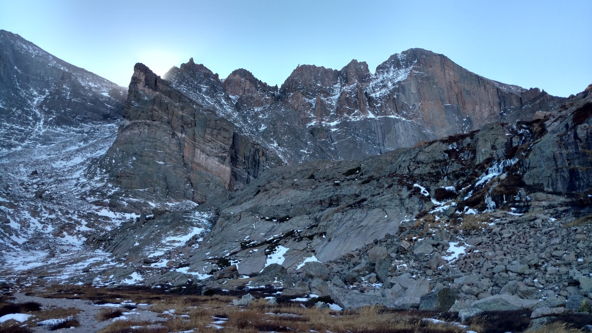
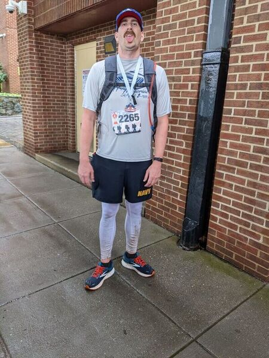
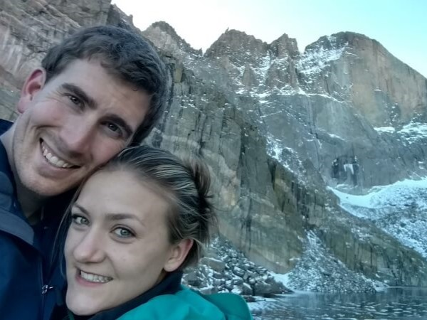
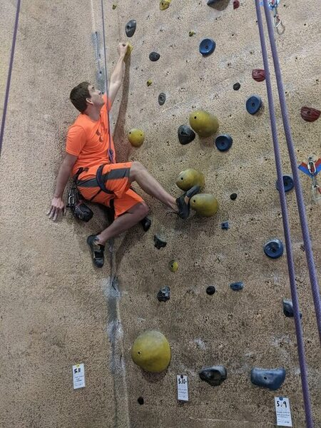
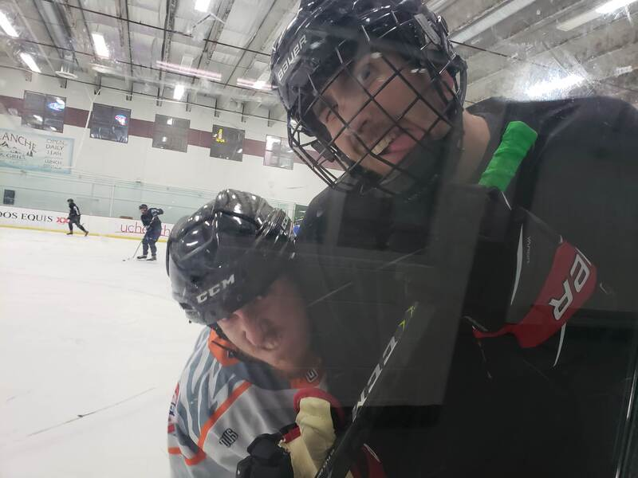
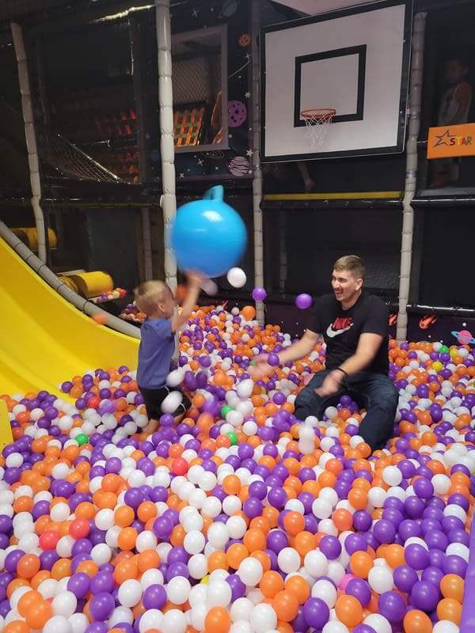

Get Moving!
What are you waiting for?
Exercise should be fun!
AT LEAST sometimes. And when it isn't fun, it should still be fulfilling in some other way. In light of that, I suggest that everyone should have at least one hobby that requires vigorous physical activity. On the less frequent occassion when you get to participate in this hobby, it will be so fulfilling to reap the benefits from regular exercise. Not to mention, there is often some social aspect to your hobby, which adds another layer of fun and fulfillment. Here are some of the things I have enjoyed doing.




